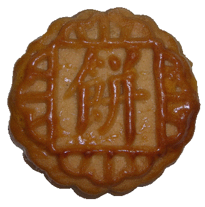
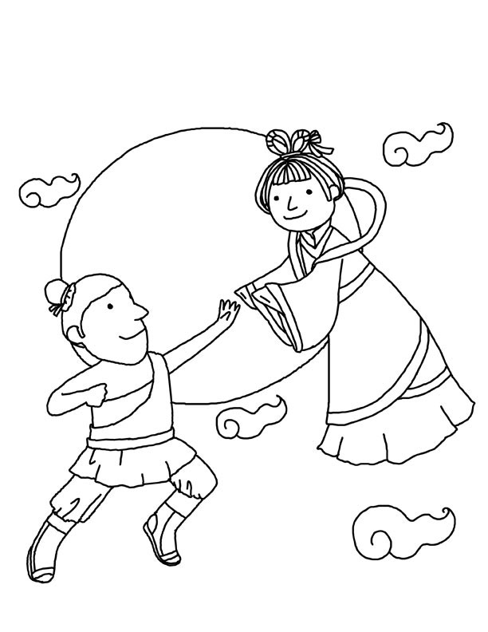

Why?
The Chinese orignally celebrated the moon festival to mark the end of harvest season.
After six long, grueling months of working the fields, peasants felt the need to reap
the benefits of their hard work and celebrate their fortunate situations.
While methods of celebration vary, most typically follow practices laid down by previous generations. These include:

Romance
Lanterns
月饼(Mooncakes)
Family
Cassia Wine
Chinese folklore states the origins of the Moon Festival come from a fateful diety by the name of 嫦娥, or Chang'E, and her husband, Hou Yi.
Legend has it, Hou Yi had expert aim witha bow and arrow... Graceful enough that when a group of ten corrupt suns scorched the fields
of farmers, he shot all but one down, relieving the farmers from their burdern.
In exchange for his valiant act, 西王母, or Empress Wang Mu, gifted Hou Yi an elixar that, if consumed,
would immediately cause the individual to rise into heaven. Hou Yi thought about this proposition, but his thoughts
quickly turned to his beautiful wife, Chang'E. How could he possibly leave her alone on this realm? Realizing the
gravity of the situation, Hou Yi chose to postpone consuming the elixar, and instead entrusted it in the hands of
Chang'E.
An enemy of Hou Yi, by the name of Peng Meng, envied Hou Yi for his possesion of this potion. One day, while Hou Yi hunted with
friends, Peng Meng burst into the chambers of Chang'E, demanding she give him the elixar. Contemplating the consequences,
Chang'E made a rash decision: she consumed the elixar herself. Immediately, she became weightless, and fluttered out the nearest
widnow towards the celestial body and, eventually, the Moon Palace.

Hou Yi, upon returning home, felt decimated to learn the news. Turning towards the moon, he began to chase after it, but found that as
he advanced, it retreated, and as he retreated, it advanced. Broken, he set up an incense table in Chang'E's favorite garden and
began to pray for her safe return. As news spread, others began to partake in Hou Yi's ceremony. To this day, Chinese pray to the moon
for Chang'E's safety and good fortune every harvest season, hoping that their prayers might be heard and Hou Yi's legacy fulfilled.